← terug naar buurtenlijst
🗺️ Van den Valgaetstraat e.o. — straatplan
🎯 = bouwjaar 1955-1980. Bekijk de 3 foto's (begin/midden/eind): is de nok halfrond ?
De aller-slechtste straten (0) zijn er al uit gefilterd. Tik GO/skip + DONE als je 'm gelopen hebt.
1
Jan Roeststraat
🎯 1972 AI: TWIJFEL
Bomen blokkeren zicht; dak dat zichtbaar is oogt oud (rode pannen).
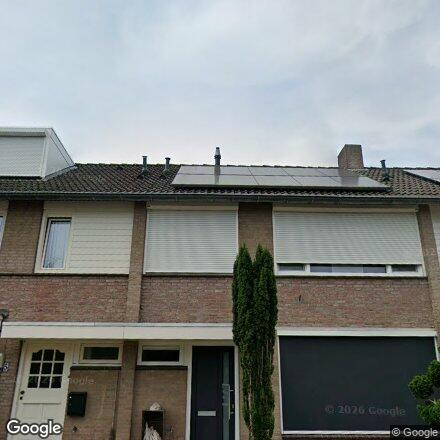
begin nr7 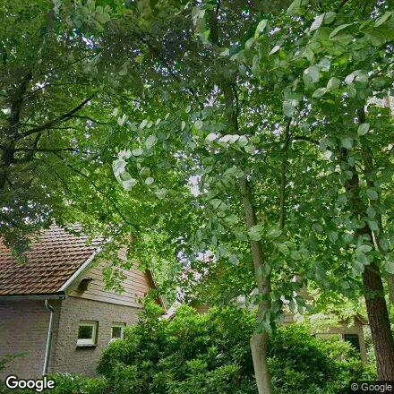
midden nr19 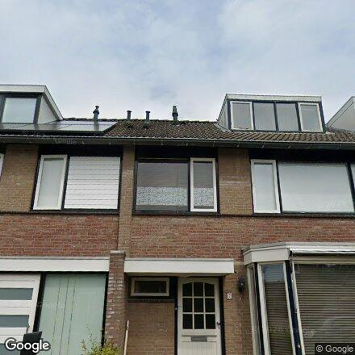
eind nr2006 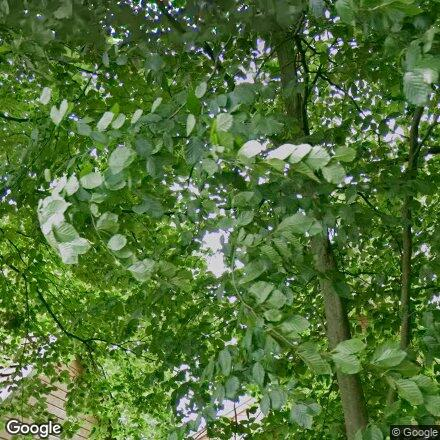
nok-zoom (midden)
✓ GO
~ twijfel
✗ skip
✅ DONE
2
van den Valgaetstraat
🎯 1973 AI: TWIJFEL
Zijgevel in beeld; randpannen ogen oud/verweerd (goed teken), maar nok niet direct zichtbaar.
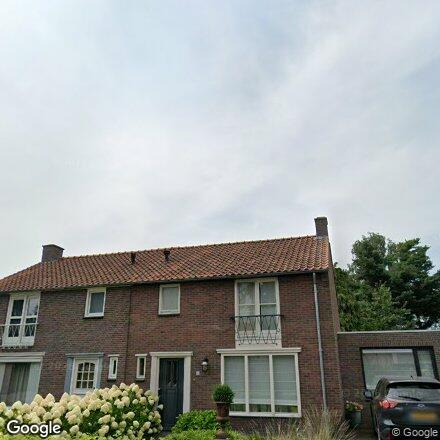
begin nr11 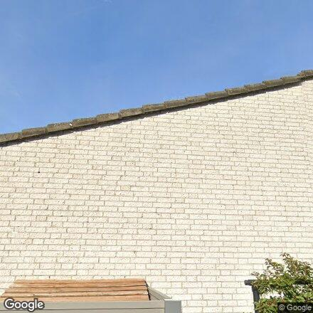
midden nr25 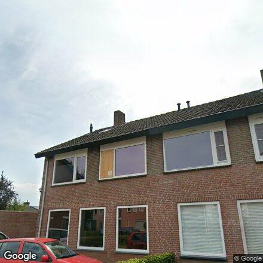
eind nr2009 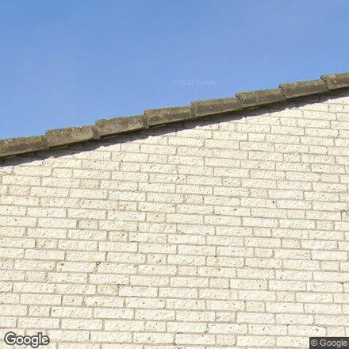
nok-zoom (midden)
✓ GO
~ twijfel
✗ skip
✅ DONE
3
Hanewinkelstraat
🎯 1973 AI: TWIJFEL
Laag donker dak, deels verscholen achter groen — bungalow-achtig, ter plekke checken.
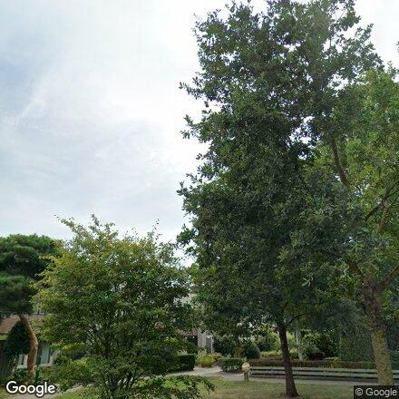
begin nr2 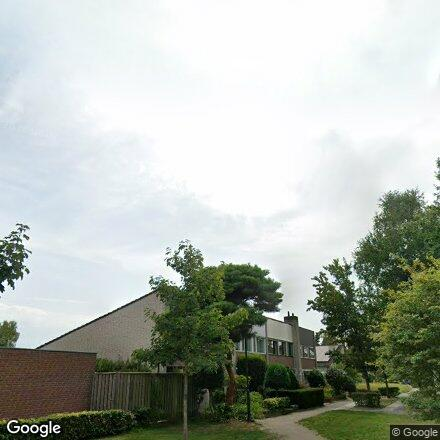
midden nr6 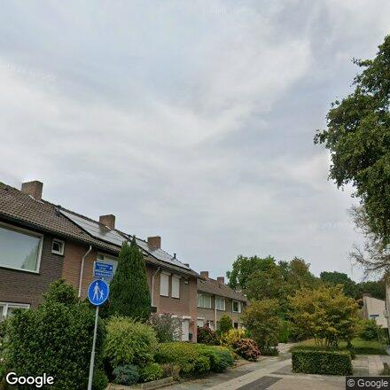
eind nr11 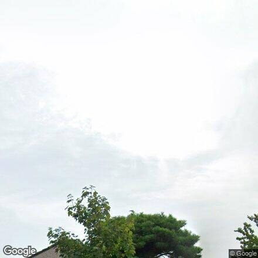
nok-zoom (midden)
✓ GO
~ twijfel
✗ skip
✅ DONE
4
van Galenstraat
🎯 1975 AI: TWIJFEL
Oude pannen + schoorsteen, maar balkons = mogelijk gestapeld/maisonnettes (huur-check).
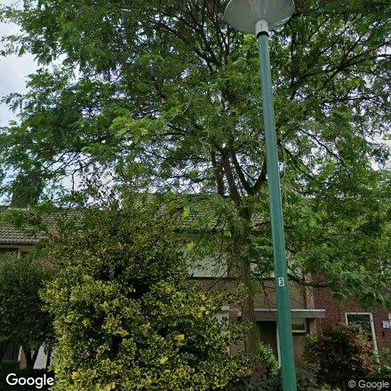
begin nr8 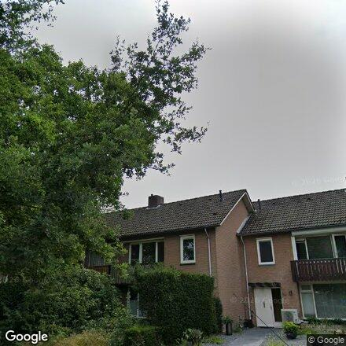
midden nr22 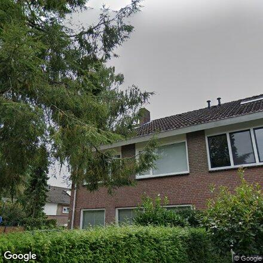
eind nr36 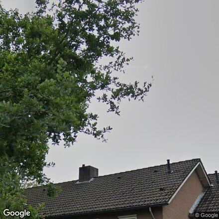
nok-zoom (midden)
✓ GO
~ twijfel
✗ skip
✅ DONE
5
Mollenstraat
🎯 1973 AI: GO
Rijtjes, bruine keramische pannen, 2 schoorstenen op de nok — origineel jaren 60-70.
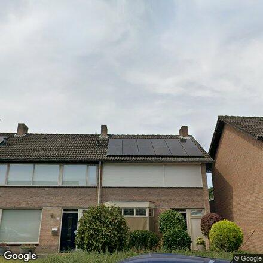
begin nr10 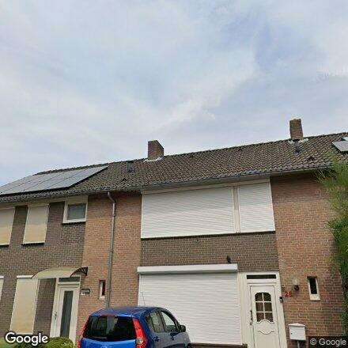
midden nr28 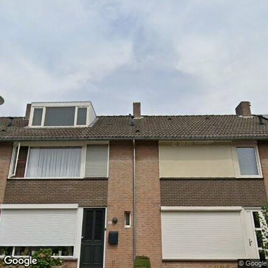
eind nr2005 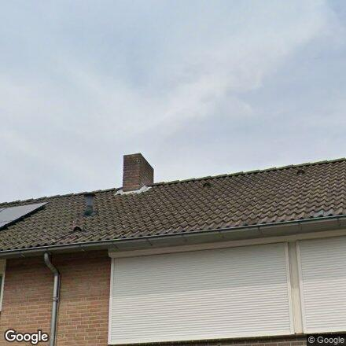
nok-zoom (midden)
✓ GO
~ twijfel
✗ skip
✅ DONE
6
Pieter Willemsstraat
🎯 1968 AI: GO
Steil oud schilddak + hoge schoorsteen, vooroorlogs — mooi upsell-target.
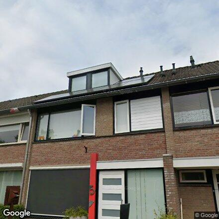
begin nr5 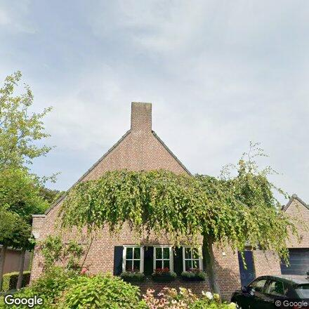
midden nr13 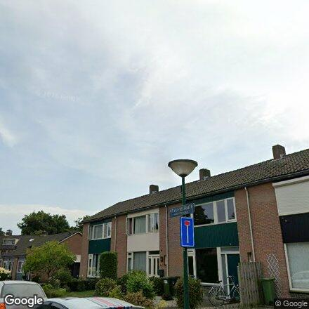
eind nr22 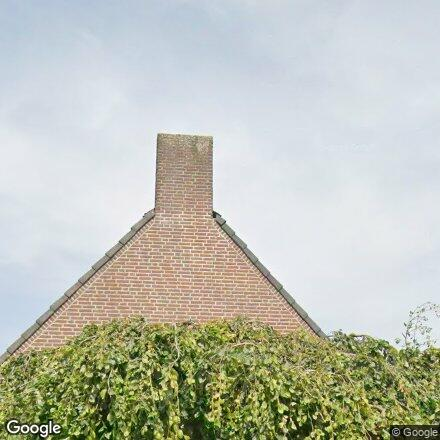
nok-zoom (midden)
✓ GO
~ twijfel
✗ skip
✅ DONE
💬 Stuur gelopen straten via WhatsApp (naar jezelf)